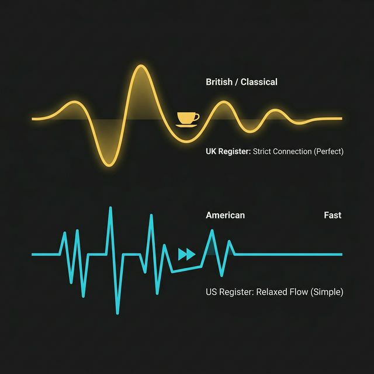

İNGİLİZ İNGİLİZCESİ (Geleneksel)
"HAVE you eaten yet?"
Geçmişte yeni bitmiş olaylarda, İngiliz İngilizcesi o kurduğumuz 'Zaman Köprüsü'ne (Present Perfect) sıkı sıkıya bağlı kalır. Sistemin mantığına tam uyar.
AMERİKAN İNGİLİZCESİ (Pragmatik)
"DID you eat yet?"
Amerikan İngilizcesi hız odaklıdır. Sonuç bariz ortadaysa, fazladan 'Have' kullanmak yerine Simple Past ile hızlıca iletişim kurmayı tercih ederler. Günlük hayatta kabul edilebilirdir.
